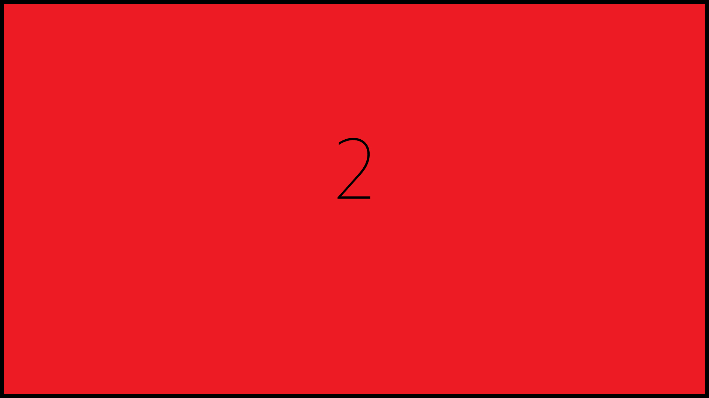
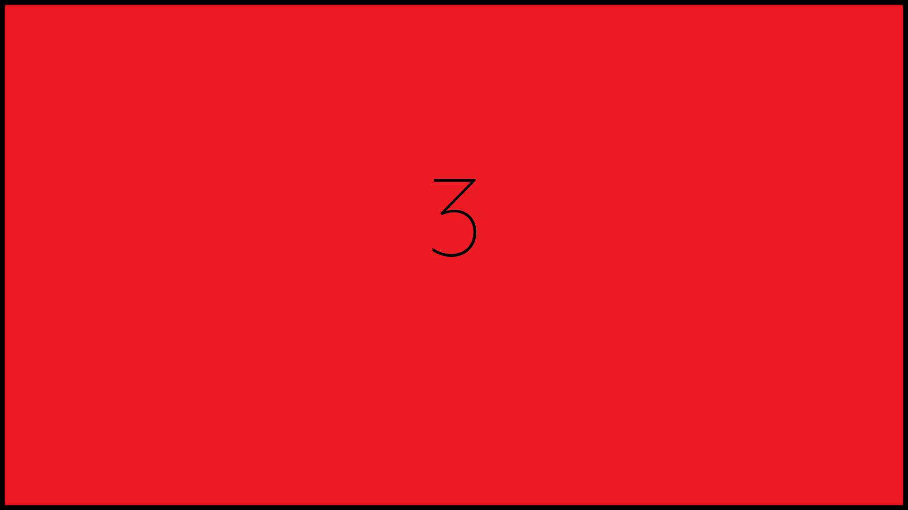
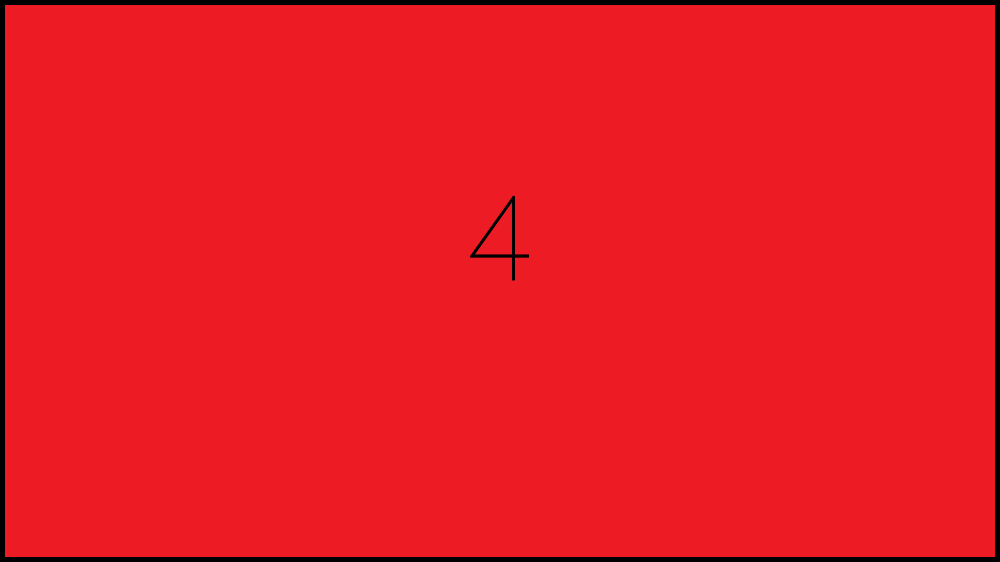

Du contenu sur un thème pour ce titre

La photographie est devenue pour moi plus qu’une passion,
c’est devenu un moyen d’expression. Je pouvais arrêter le temps, figer un instant,
immortaliser un décor ou une personne, et exposer mon paradigme.
Cette passion je la nourrissais chaque dimanche dans mon église en tant que photographe de culte.
Aaprès une certaine expérience je suis devenu photographe de mariage.
J’ai donc commencé à percevoir un revenu...
mon école se rapprochait : Tic-tac ! Tic-tac ! Tic-tac !
Pour accélérer le mouvement, j’entame ma carrière de coursier à vélo !

5000 livraisons de repas pour Deliveroo, UberEats et Stuart plus tard, j'intègre Mon École,
la Normandie Web School, pour la modique somme de 29120 km.
Ces deux années d’expériences professionnelle m’ont permis d’une part d’en savoir davantage sur moi
: qualités, compétences, points fort, domaines à améliorer, - pensez on a du temps quand on roule -
et de voir l'école comme un Graal derrière lequel je n’ai cessé de pédaler. Maturité ?

Pour résumer, ma plus grande capacité, celle de m’adapter tel un caméléon,
m’a-permis de m’intéresser à différents domaines et donc à mieux de me connaître,
et savoir ce que je veux. L'art, la photographie, les finances, l’économie,
le sport, la gestion, le développement personnel, la lecture et j’en passe ;
tous ces domaines m’ont permis d’assimiler des connaissances qui font de moi
cette personne polyvalente et dynamique que je suis aujourd’hui.
Mes lectures sur des lois comme celle de l’attraction ont un impact majeure sur ma personnalité,
alors encore une fois, croyez en moi...
...ou croyez au moins à mes actions